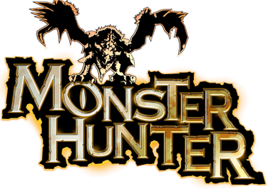

Welcome all Hunters
About Monster Hunter
Monster Hunter is an action rpg series that was debuted in 2004, with the release of the original Monster Hunter. Since then, the series has had multiple generations of mainline games and expansions. The mainline games include: Monster Hunter, Monster Hunter Dos, Monster Hunter Tri, Monster Hunter 4, Monster Hunter World, and Monster Hunter Rise. Expansions include: the "Ultimate" versions of certain titles, the "Monster Hunter Generations" series, the "Monster Hunter Frontiers" series, the "Monster Hunter Freedom" series, Monster Hunter World: Iceborne, and Monster Hunter Rise: Sunbreak. The series features over 200 different monsters to battle across the franchise, and over a dozen unique weapons to hunt with. Each weapon has a unique playstyle, so every hunter will be able to find one that suits their hunting preference. On top of weapons, up to four players can hunt at once. Gather your friends and depart on a quest today!
